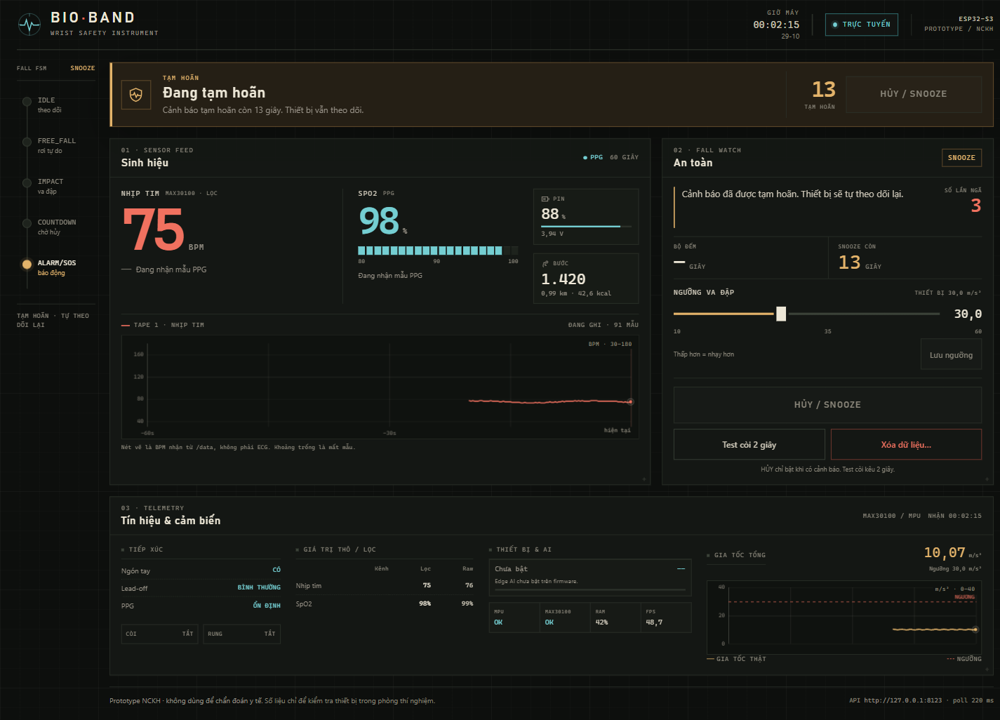
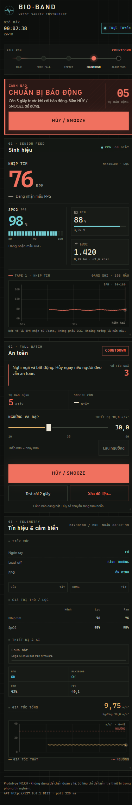

Phát hiện té ngã
Free-fall → impact → inactivity, xác nhận bằng rule-based. Countdown 10 giây để hủy, sau đó báo động tại chỗ.
MPU6050 · 25 m/s²Prototype NCKH · ESP32-S3
Phát hiện té ngã, đo nhịp tim/SpO2 và báo động tại chỗ. Dashboard realtime, OLED và còi buzzer — tất cả trên một thiết bị đeo.

Ảnh chụp giao diện demo. Thiết bị thật phục vụ dashboard tại địa chỉ IP của board.
01 · Tính năng
Free-fall → impact → inactivity, xác nhận bằng rule-based. Countdown 10 giây để hủy, sau đó báo động tại chỗ.
MPU6050 · 25 m/s²MAX30100 đo PPG 100 Hz; lọc nhiễu chuyển động, perfusion index và median 3. HR/SpO2 hiển thị realtime.
MAX30100 · 11 mABuzzer active và OLED cảnh báo; nút hủy trên thiết bị hoặc web. Không phụ thuộc cloud hay Telegram.
Local · no cloudWeb tự chứa, responsive cho PC/điện thoại; nhúng trong firmware và phục vụ tại /. Có capture IMU cho Edge AI.
02 · Giao diện
Dashboard giữ cấu trúc instrument trên PC và chuyển thành layout dọc trên điện thoại — cùng dữ liệu, cùng thao tác.

Ảnh chụp với dữ liệu mô phỏng. Dashboard live cần kết nối thiết bị qua WiFi 2.4 GHz hoặc AP của board.
03 · Phần cứng
ESP32-S3 Super Mini, bus I2C dùng chung 8/9, cảm biến quang MAX30100 và MPU6050. Pin LiPo chưa hàn; ADC GPIO3 dành sẵn cho cầu phân áp.
Đọc handoff đầy đủ ↗0x3C0x680x57GPIO 8 / 9GPIO 1 / 2GPIO 704 · Trạng thái